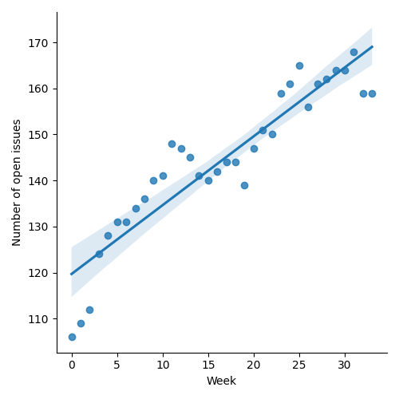
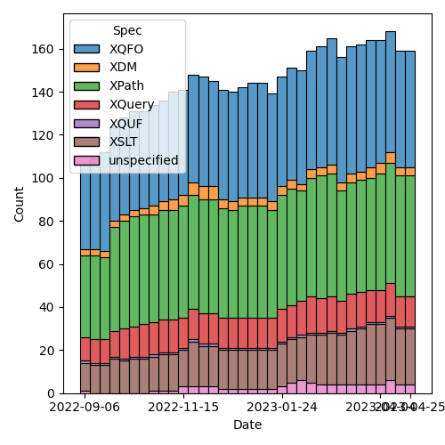

QT4 CG Meeting 032 Minutes 2023-04-25
Table of Contents
Draft Minutes
Summary of new and continuing actions [0/12]
[ ]QT4CG-002-10: BTW to coordinate some ideas about improving diversity in the group[ ]QT4CG-016-08: RD to clarify how namespace comparisons are performed.[ ]QT4CG-026-01: MK to write a summary paper that outlines the decisions we need to make on “value sequences”- This is related to PR #368: Issue 129 - Context item generalized to context value and subsequent discussion.
[ ]QT4CG-029-01: RD+DN to draft spec prose for the “divide and conquer” approach outlined in issue #399[ ]QT4CG-029-07: NW to open the next discussion of #397 with a demo from DN See PR #449[ ]QT4CG-031-03: CG to draft a PR to address issue #410[ ]QT4CG-032-01: NW to make sure open PRs are on the agendas in future[ ]QT4CG-032-02: MK to adjust the grammar in #433 per CGs suggestion.[ ]QT4CG-032-03: MK to change 32 to 36 in 4.5.2 fn:parse-integer[ ]QT4CG-032-04: JK to suggest an example for base 26.[ ]QT4CG-032-05: MK to check that the terminology in format number isn’t too biased towards decimal[ ]QT4CG-032-06: MK to a compatibility note about the use of ^ in format number.
1. Administrivia
1.1. Roll call [10/13]
Regrets BTW.
[ ]Anthony (Tony) Bufort (AB)[X]Reece Dunn (RD)[X]Sasha Firsov (SF)[X]Christian Grün (CG)[X]Joel Kalvesmaki (JK) [0:06-][X]Michael Kay (MK)[X]John Lumley (JL)[X]Dimitre Novatchev (DN)[X]Ed Porter (EP)[X]C. M. Sperberg-McQueen (MSM)[ ]Bethan Tovey-Walsh (BTW)[X]Norm Tovey-Walsh (NW). Scribe. Chair.
1.2. Accept the agenda
Proposal: Accept the agenda.
Accepted.
1.2.1. Status so far…

Figure 1: “Burn down” chart on open issues

Figure 2: Open issues by specification

Figure 3: “Burn down” chart on open issues
1.3. Approve minutes of the previous meeting
Proposal: Accept the minutes of the previous meeting.
Accepted.
1.4. Next meeting
The next meeting is scheduled for Tuesday, 2 May 2023.
No regrets heard.
ACTION QT4CG-032-01: NW to make sure open PRs are on the agendas in future
1.5. Review of open action items [2/8]
[ ]QT4CG-002-10: BTW to coordinate some ideas about improving diversity in the group[ ]QT4CG-016-08: RD to clarify how namespace comparisons are performed.[ ]QT4CG-026-01: MK to write a summary paper that outlines the decisions we need to make on “value sequences”- This is related to PR #368: Issue 129 - Context item generalized to context value and subsequent discussion.
[ ]QT4CG-029-01: RD+DN to draft spec prose for the “divide and conquer” approach outlined in issue #399[ ]QT4CG-029-07: NW to open the next discussion of #397 with a demo from DN[X]QT4CG-031-01: MK to updatemap:ofto have more complete examples See PR #449[X]QT4CG-031-02: MK to make the map options into definitions. See PR #449[ ]QT4CG-031-03: CG to draft a PR to address issue #410
2. Technical Agenda
Once again, this week’s agenda mostly continues where we left off last week. I’ve moved a couple of hopefully easy PRs to the top of the list.
2.1. PR #433: Allow hex and binary literals and allow underscores
See PR #433
MK walks us through the issue.
- MK: The change is quite modest, but there are a few small questions.
- … The change is essentially in literals; we introduce two new forms of numeric literals.
- … Change for digits production is to allow underscores.
- … What rules should we apply? Underscores at the beginning or end or adjacent?
- CG: I gave some examples for Java and JavaScript
- … (Looking at a comment on the PR)
- NW: I think we should avoid them at the beginning.
- MK: I like CG’s version of the grammar.
- MSM: The only case I can imagine for wanting an underscore at the end is if I’m aligning several lines of numeric constants.
- DN: What’s the purpose of using underscore?
- MK: When you have long numbers, like one trillion, it helps you count the number of digits.
- MSM: Because you can’t use “,” or “.” without confusing half of the world.
- RD: Different languages can use different symbols; C++ uses
'.
ACTION QT4CG-032-02: MK to adjust the grammar in #433 per CGs suggestion.
Proposal: Accept this PR
Accepted.
2.2. PR #434: Functions to parse and format hex integers
See PR #434
MK reviews the PR.
- MK: This primarily changes the F&O spec.
- … The first change is for parsing integers in different radixes.
- … We have
fn:parse-integerwith a radix that defaults to 10. - … It doesn’t express formally what the result is; we just assume it’s obvious.
- RD: We’re not using this to potentially be able to parse things like roman numerals and things.
- MK: No, and it’s ASCII digits only.
- RD: Counter styles has a good discussion of this: https://www.w3.org/TR/css-counter-styles-3/
- MSM: Is dotted uppercase I the equivalent of uppercase I?
Some discussion of how much precision we need to apply. If it’s not obvious, then we probably ought to spell it out in horrid detail.
- DN: I was expecting to see examples with underscores in them. If users will type them, it will be convenient to allow them here. I’m guessing that there’s no limit on the size of the integer or the length of the strings.
- MK: On the first point, I thought the use cases is for reading
documents in a variety of formats. If the format does allow
underscores, it’s easier to strip them out.
- … I deliberately chose not to on the grounds that a typical input document that you’re reading (a color attribute in a CSS document) is going to require some preprocessing and it’s easy enough to strip them out.
- … On the second point, there’s an error condition if it’s too big.
Some discussion of how many digits are required/allowed.
ACTION QT4CG-032-03: MK to change 32 to 36 in 4.5.2 fn:parse-integer
- DN: Maybe it could be an alternative to have a second argument to allow underscores. Otherwise it’s a little bit confusing.
- MK: I do think the use cases are very different.
- NW: I don’t see how throwing away underscores would be more difficult.
- MK: I guess we could.
- JK: I think we should support underscores here. One thing I’m going to be doing is parsing XSLT. The one thing I think is missing is base64binary, but obviously you can just cast that and manipulate it. It would also be helpful to have examples that demonstrate the base 26 case which usually only uses letters.
- MK: Where is it used?
- JK: In our workshop, we use aaa for 0, etc. And we have files with these extensions.
- RD: Excel indexes are also done this way.
ACTION QT4CG-032-04: JK to suggest an example for base 26.
- JL: I tend to agree with MK that keeping this just acting on the digits is the best thing. There are all sorts separators could be used. I suggest we add a note that specifically says that we anticipate that other separators will be stripped out.
- NW: That also sounds reasonable to me.
- SF: We could have an optional parameter that specifies ignored characters.
You could ignore hash for example or apostrophes, etc.
- … It would also be nice to be able to specify the characters in the alphabet. That would make for a wider use case.
- MK: My feeling is that the design principle is that functions should do one thing and do it well. You can handle both of those use cases by combining this function with translate. Rather than having one function do too much.
- RD: I was going to say what SF said.
- SF: An example that uses translate would be good.
- MK: Yes.
MK moves on to formatting numbers.
- MK: I’ve extended the
fn:format-integerto accept the radix in the format string.- … The picture string begins with (base)^, so “2^” for binary, “16^” for hex.
- … That’s almost backwards compatible except in some very rare cases.
- … It requires a fair bit of generalization in the text that may not be perfect yes.
- RD: What are the compatibility issues?
- MK: If you used the “^” as the grouping separator, you’re allowed to repeat the digits. So “16^16” would mean output the number with the grouping charater “^” every two characters.
Some discussion about whether there’s a note about the incompatibility or not.
ACTION QT4CG-032-05: MK to check that the terminology in format number isn’t too biased towards decimal
ACTION QT4CG-032-06: MK to a compatibility note about the use of ^ in format number.
Proposal: Accept this PR:
Accepted.
2.3. Issue #359: fn:void: Absorb result of evaluated argument
See Issue #359
- CG: If you have functions that have side effects or if you aren’t
interested in the results, then you have a case where you aren’t
interested in the result, but only if the code is executed.
- … People often try to circumvent the problem that functions always return something.
- (There are examples in the issue.)
- … One solution is to have a
fn:void()function that evaluates code and always returns an empty sequence. - … It’s not really settled what happens with non-deterministic code or side-effects.
- … My suggestion is that we enforce the evaluation of the argument whenever it’s non-deterministic, but an implementation might otherwise be free not to evaluate it.
- … But I’m not sure.
- DN: I think that it’s a good proposal. I have a number of comments,
but my main concern is that this function
fn:voidseems a little confusing. What’s wanted here is eager evaluation of the argument. So we could call itfn:eager. This is a very special function, the optimizer must not discard it! Using the determinism of the argument may be difficult. - CG: I think your use cases are interesting, but I definitely think it’s a different use case. Here it’s really about ignoring the result. I think we should talk about eager and lazy functions in a different context.
- DN: Okay, but we need to be clear about evaluation of the arguments.
- RD: Eager evaluation vs lazy evaluation is different than what this
is proposing. I pointed this out in the examples on the issue. For a
database query, for example, you always want the result whether it
was eager or lazy, but this is explicitly about discarding the result.
- … Consider
1 => fn:void(), 2 => fn:eager(); it should return2not(1,2). - … In a nested loop, lazy evaluation could evaluate each item multiple times.
- … Consider
- JL: I think DN is right that this function has to be treated specially by the compilers. It’s signature says it produces a constant result, so the optimizer could easily just replace all the calls.
- MSM: I’m having trouble getting my head around the proposal and the discussion.
- … First, I think it’s true that lazy vs eager is not the same as I care about the result or discard it. The use case that makes sense to me is that I have some code that I want to evaluate for the side effects.
- … The second thing that bothers me is when you’re writing a script that calls programs, you must always check the return code. Because if you don’t care about the result, why are you calling the program in the first place.
- CG: In our cases, we have users that use modules that are written by other people. Some raise errors, some return errors. Sometimes all you care about is whether the code parses or not. Or sometimes you might get a jobid and maybe you don’t care about it.
- MSM: Ok. Earlier, you talked about wrapping a function call in void in order to comment it out. But when I do that, I expect them not to be executed. But that’s not quite the same here.
- CG: Right. That’s something we should clarify that. I think it depends a lot on the implementations. For BaseX, we only evaluate non-deterministic code. But we could say always for fn:void.
- DN: I wanted to say what MSM said. It seems bad to ignore the return code.
- … This is a special case of a special case. I think that we have a general case that is more important: that’s eager vs. lazy evaluation.
- RD: I wonder if we’ve got a slight difference in terminolgy here. If I understand DN and MSM correctly, “eager” means that at the point when the function is called the expression gets evaluated to some value. Whereas if you don’t use that, the processor is able to defer the evaluation to some point in the future. What I’m referring to is the value is computed but is returning a generator function that generates the values on demand. That being “lazy” evaluation and “eager” computes them all.
- DN: When we have “eager” we don’t care internally how it works.
- CG: Do you always get the result without eager?
Some discussion of what happens to return values.
- MK: This is all about forcing evaluation of things that have side
effects. We have a long history of trying to do that with
xsl:result-document. It proved fairly troublesome over the years
because we don’t really have order-of-execution semantics to
underpin it. It’s been made workable mainly by constraining the
places where you can use it.
- … Assigning an expression to variable that isn’t used isn’t going to be solved by calling fn:void on the right hand side.
- … In XSLT, we only allow it at the top level so it’s implicitly a sequential evaluation.
- … I don’t think we can use
fn:void()anywhere in an expression without having a lot more work on the semantics.
- CG: I assume that functions like
file:writeare implemented differently in Saxon and BaseX. The challenge is the same but the solutions are different. - MK: If the user puts them where the optimizer can muck with them,
then they may not get the results the expect. If you put
file:writeinside a predicate or sort key, it’s going to be pretty unpredictable what happens.
3. Adjourned
None heard.